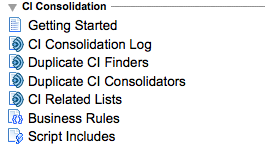

Legacy:Discovery CI Consolidation
| |
Functionality described here is obsolete since the Winter 2010 release and has been replaced by Discovery Identifiers. |
| |
Warning: Do not install this plugin. It interferes with the current functionality. |
1 Overview
Discovery by itself (that is, without CI Consolidation) makes no attempt to use CIs that it didn't create itself. In effect, Discovery assumes that all CIs of the types that it discovers were created by Discovery. You can import enhanced CIs that coalesce with CIs that Discovery created, but if your CMDB already has CIs, Discovery won't coalesce with them.
For example, suppose your organization had an empty CMDB, and then used Discovery to populate it and maintain current information. You might even have enhanced information about (say) printer CIs, and you could import that information, coalescing with the printers that Discovery found. All of that works with Discovery all by itself.
But let's take a different scenario. Suppose your organization had already populated your CMDB with server and printer CIs, imported (say) from data manually maintained in a legacy system. Then you discovered Discovery, and you decided to use it to enhance and maintain your CMDB's information. This is the scenario where Discovery by itself does something you probably won't find desirable: Discovery will ignore all those CIs that are already in the CMDB, and it will merrily create its own CIs for the same thing. In other words, you'd end up with duplicate CIs – one set of CIs created by importing, the other by Discovery. This is the scenario where Discovery CI Consolidation (DCIC) is useful.
DCIC handles this scenario for you, automatically. It works CI-by-CI, as Discovery finishes exploring each CI. At that point, DCIC takes these steps:
- DCIC looks for another CI that's a duplicate of the CI just discovered.
- If a duplicate CI was found, DCIC consolidates the two CIs into a single CI.
- DCIC repeats (1) and (2) until there are no more duplicate CIs found.
You can customize every part of this process, so you can handle your imported (or manually created) CIs no matter what you've got.
Discovery CI Consolidation is a plug-in that must be activated for you to use it. If you'd like this plug-in activated, please contact support.
2 Configuring Discovery CI Consolidation
Once the DCIC plug-in is activated, a new section and menu appears toward the bottom of the Discovery Definition application (see screenshot at right). Everything you need to administer and configure DCIC is in this section.
|
 |
{kind=link}
3 Testing and Debugging Discovery CI Consolidation
When you modify a Duplicate CI Finder or Duplicate CI Consolidator, it's a good idea to test what you've done. Discovery CI Consolidation has several features to help you with this process:
- Test CI Consolidation. This appears on any CI form as a link, or on any list of CIs as a right-click menu item. Selecting either will run CI Consolidation for that CI, exactly as if that CI had just been discovered. A useful technique to test your finders and consolidators is to choose an existing CI to test with, then make a copy of it with something different about it so that you can identify it. An easy way to do this is to go into the CI's form, modify something on it, then right-click in the title bar and choose “insert”. At this point you'll have a duplicate of that test CI, and if you run the test CI consolidation, your finders and consolidators will be run on just that CI. Note that whatever CI you're in when you click the Test CI Consolidation link is the source CI – exactly as if that CI had just been discovered.
- CI Consolidation Debugging. This is a Discovery property (see these at Discovery Definition Properties) that controls whether extra debugging logging is made to the CI Consolidation Log (see above). Checking this property will cause extensive logging into the CI Consolidation Log, so you'll want to be careful exactly when you turn this on. This property is primarily useful in situations when you cannot determine exactly when something is going wrong with a finder or conslidator. Having the logging results available will tell you exactly what steps took place before the error you're getting.
{kind=link}